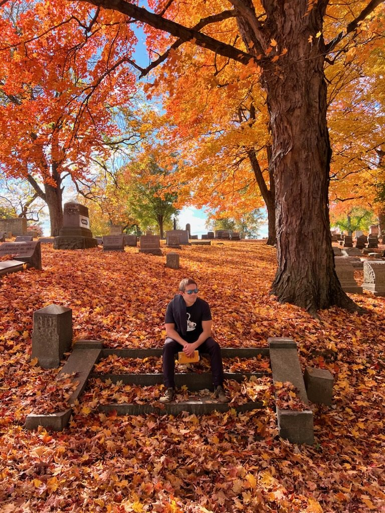

About
Seyirdem is an ongoing project active since the early 2000's. I have been fascinated by music and composition since childhood. The first instrument I remember "playing" as a child was the guitar. I remember my Dad playing to my sister and I as children and while he was at work I would often go into my parents' bedroom to open up the guitar case and strum the strings. I still remember the smell of the wood and the way the strings vibrated. After letting the strings ring I would close the case and imagine what it would be like to know how to play. That same Alvarez acoustic is now hanging in my home studio and even featured on the Öteki Alem record.
One Christmas while in primary school I received a small boombox with a CD and cassette player. The cassette player also had a record button that I remember being intrigued by. I discovered that I could put a blank tape in, or overwrite some of my parents unused tapes, and record bits of CD’s onto them. In a rudimentary way this was my first introduction to music composition. I used to spend hours recording specific parts from my CD’s to combine together and make my own tapes. In some ways I think this is how I still write songs today. Later in fourth grade and inspired by my grandfather, I picked up the trumpet. Eventually my desire to play the guitar came back as I became inspired by heavy metal music.
The first form of the band was named Mourdom and one demo song was released under that name titled “Forgot My Name”. It’s kind of a lame adolescent take on psychedelics, existentialism, and sounds a bit like a Tool or Opeth knock off song. The hubris! Only someone like the great Chuck Shuldiner can write about philosophy and not sound arrogant. Regardless, I was proud of that track at the time and it is still fun to play.
For the decade of my twenties I was mostly focused on becoming an electrical engineer and lost interest in composing music. Part of this was a lack of feeling a true home for my studio, and part of it was just a coming of age I guess. I think the world has to kick you in the ass a few times to find yourself. In my case it was rediscovering my childhood love of music. I also started buying records in my twenties. I was and continue to be deeply inspired by Dereck Higgins. His love of records, music, and life wisdom helped me to rediscover my passion.
You see, I think part of my problem was that though I always wanted to write music I could not help but allow myself to be pulled in the directions of my perceived "responsibilities". The endless problems an old house, a car, and a career. As you realize when you get older that you have a choice how you spend your limited free time. We just don’t know how many healthy days we have.
So as I was rediscovering my passion for music I met my wife Azime and we had our amazing son Atlas. Later in my early thirties I became passionate about learning Turkish and read many great novels. I continue to be inspired by Turkish culture and hopefully that shows in the music. The band took the name Seyirdem during this time, inspired by a novel called Suskunlar by the great Ihsan Oktay Anar.
This is more than anyone needed to know about the project but it was certainly therapeutic to write down! Stay inspired. In conclusion Seyirdem is about real music by real people.
“Dünyadaki en büyük mutluluk, dünyanın şahidi olmaktı.”
— Ihsan Oktay Anar, Puslu Kıtalar Atlası